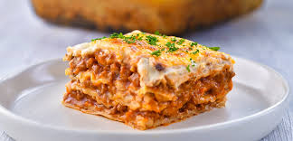

Lasagna

Ingredientes
- 600 g carne de ternera para guisar
- 300 g panceta de cerdo
- 1 cebolla
- 2 zanahoria
- 1 rama apio
- 200 ml vino tinto
- 800 g tomates pelados o salsa de tomate
- 50 ml leche
- 3 cda aceite de oliva
- pimienta negra molida al gusto
- sal al gusto
Pasta para lasagna
- 200 g harina comun
- 2 huevos talla L o grandes
- 1-2 cda aceite de oliva
- 1 pizca sal
Bechamel
- 80 g mantequilla
- 80 g harina comun
- 750 ml leche
- nuez moscada al gusto
- sal al gusto
- pimienta negra al gusto
- 200 g queso parmesano
Elaboracion paso a paso
- Cortamos la panceta en cuadraditos pequeños. Pero primero quitamos la piel porque es muy dura.
- Ponemos la panceta a fuego medio para que se vaya haciendo despacio.
- Mientras tanto cortamos las verduras en cuadrados pequeños.
- ¡No olvidamos de remover la panceta!
- Añadimos a la sartén con la panceta un chorro de aceite. A ser posible el de oliva.
- Y añadimos las verduras.
- Añadimo 1 pizca de sal.
- Y, a fuego medio bajo, cocinamos hasta que la cebolla, la zanahoria y el apio se ablanden
- Añadimos la carne de ternera
- Hacemos el fuego medio alto y removemos muy bien.
- Una vez la carne haya cambiado de color añadimos 1 vaso de vino tinto
- Cocinamos hasta que se evapore el alcohol
- Añadimos salsa de tomate o tomates troceados
- Una vez que la salsa haya empezado a hervir hacemos el fuego bajo y ponemos la tapa pero dejando un hueco para que salga el vapor
- La salsa hay que cocerla de 2 a 4 horas. Con mucha calma. Si ves que se esta quedando seca añade un poco mas de agua o de caldo
- Salpimentar al gusto
- Añade la leche para equilibrar la acidez
Pasta Casera
- Tamiza un recipiente de 200g de harina
- Añade 1 pizca de sal
- Casca 2 huevos grandes
- Añade 1 chorro de aceite de oliva
- Remueve bien
- Termina de hacer la bola con la mano
- Esta masa no hay que amasarla mucho. Solo integrar muy bien todos los ingredientes
- Tapamos y dejamos reposar 20 minutos
- Estirar la pasta con un rodillo hasta que empìece a transparentarse
- Cortar las laminas en tamaño 10x12cm
- En abundante agua con sal cocemos la pasta aproximadamente un minuto.
- Enjuagamos con agua fria.
- Colocar sobre un paño para que seque
Bechamel
- Derretir la mantequilla
- Añadir la harina
- Rehoga la harina 2 a 3 minutos a fuego lento
- Añade leche fria y haz el fuego alto
- Remueve muy bien hasta espesar
- En cuanto hierva bajar el fuego a medio y cocinar durante 2 a 3 minutos
- Retirar la bechamel del fuego
- Condimentar con sal y piemienta al gusto
- Agregar una pizca de nuez moscada
- Rallar el queso parmesano
- Unta el molde o la fuente con la mantequilla
- Cubre el fondo con bechamel
- Coloca por encima una capa de pasta
- Por encima de pasta va el ragu o salsa de carne
- Rocia el ragu con un poco de bechamel
- Espolvorea con parmesano
- Otra vez ponemos pasta, ragu bechamel y queso hasta llenar el molde
- La ultima capa cubrimos generosamente con bechamel y espolvoreamos generosamente con queso
- Hornear la lasgna 45 minutos, los ultimos 5 minutos a 250 C
- Dejar enfriar
- Emplatar
Inicio